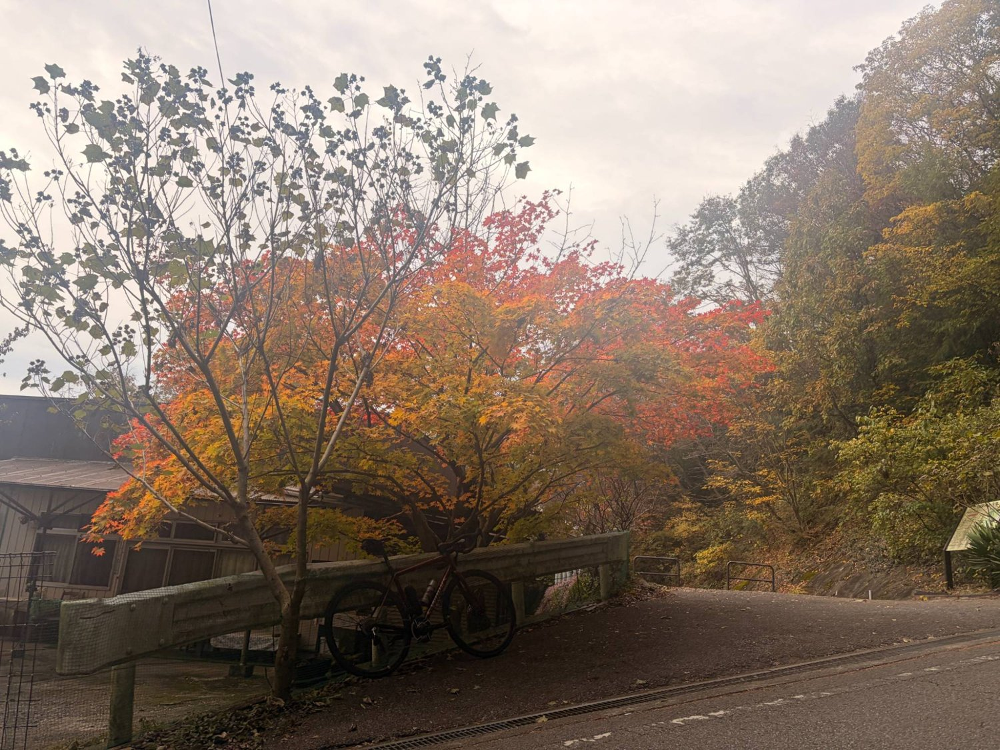
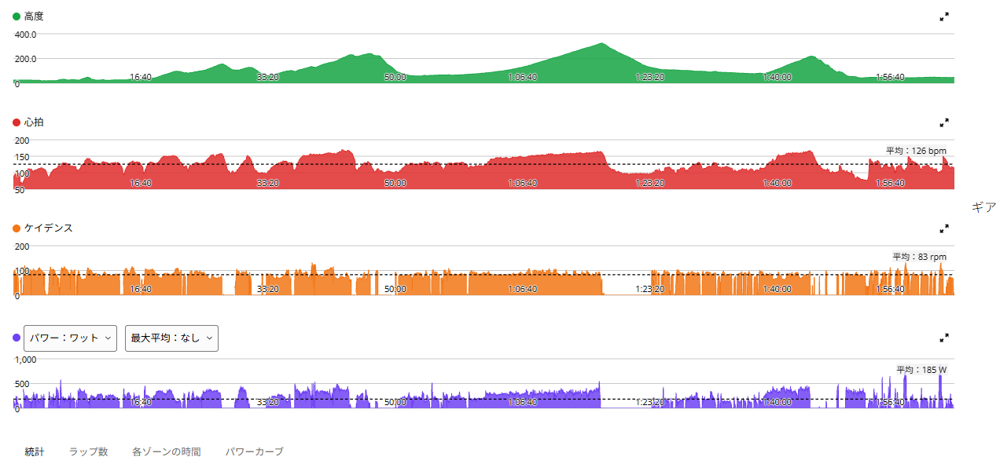
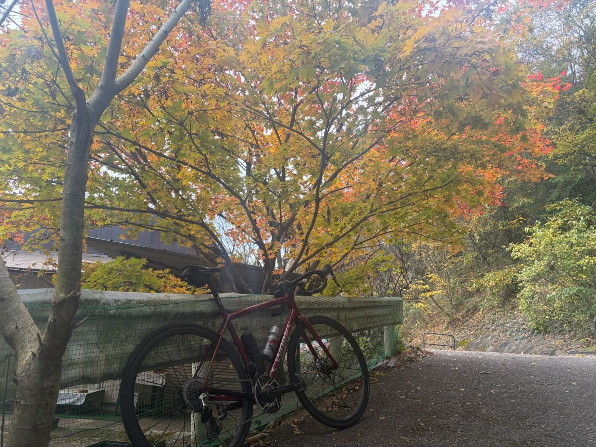
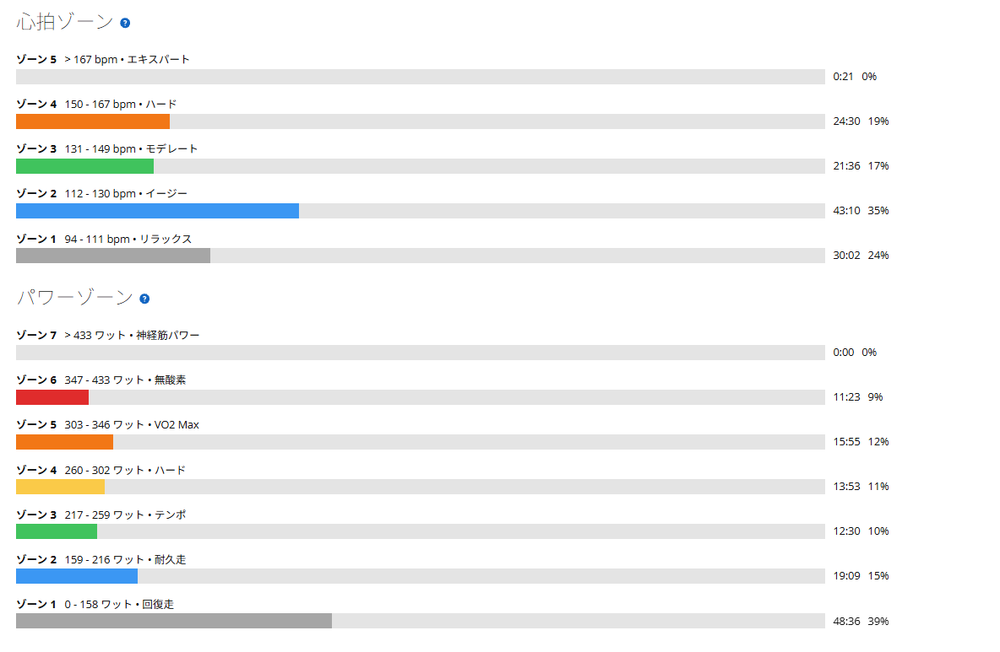

休養明けの唐沢で357W。重いギアが踏めた日と、秋の終わりの紅葉
今日はいつもの太平→琴平→唐沢へ。最近は練習量が増えていたので、途中でベース走を投げ出す日もあったし、思い切って負荷を落とす日も作った。11月21日は完全休養、22日は友人と唐沢をおしゃべりしながら5回登った。脚がものすごく軽くなったかと聞かれると分からないけれど、少なくとも重くはない。
そんな状態で迎えた今日。朝の平均気温は6.1℃、最低4℃。外はもうすっかり冬の気配だ。それでも山の木々にはまだ赤や黄色が残っていた。

数字は、なかなか容赦がない
- 全体51.83km / 2時間03分12秒 / 獲得864m / 平均気温6.1℃
- 負荷平均185W / NP256W / IF0.887 / TSS161.0 / FTP設定289W
- 心拍・回転平均126bpm / 最大170bpm / 平均83rpm

登りで強く踏んで、下りで回復するいつものコース。平均パワー185Wだけを見ればそれほどでもなさそうだが、NP256WとTSS161.0を見れば、しっかり負荷がかかったことが分かる。
| 日付 | 太平山 | 琴平峠 | 唐沢山 |
|---|---|---|---|
| 11月4日 | 約7分・331W | 約14分・315W | 約5分半・343W |
| 11月17日 | 約7分・327W | 約14分・305W | 約6分・327W |
| 今日 | 約7分・331W | 約15分・305W | 約5分半・357W |
琴平は今日も出し切った
琴平峠は305Wで約15分。11月17日も同じ305Wだったが、タイムは今回の方が45秒ほど遅い。同じ出力なのに速さが違うと、ちょっと複雑な気分になる。でも、風や路面などの条件もある。何より今回も、いつもどおり限界まで踏んだ。余裕を残して楽に登ったわけではない。
富士ヒルに向けて大切なのは、このくらいの出力をもっと長く維持すること。15分間の限界走はまだまだきつい。そこが今の現実でもある。
唐沢では、いつもより一段重いギアを踏めた
今回いちばん驚いたのは、後半の唐沢山だった。約5分半で357W。前回11月17日は約6分・327Wだったので、平均出力が30W高い。11月4日の343Wも上回った。
特別な秘策があったわけではない。ただ、今日は重いギアを踏める感じがした。そこで普段より一段重いギアにして、ガンガン登っていった。回転数は平均78rpm。前回の同区間の80rpmと大きく変わらない。低めの回転数でも強く踏めたというのは、今の自分にとって手応えがある。
分かってはいる。でも、踏める日は踏みたくなるのだ。それに、以前ローラーで感じた「尾てい骨から回す」「後輪を回す」「ペダルを大きく回す」という不思議な感覚も、少しずつ試している。実走ではローラーと同じ感じにはならないので、今日の高出力の理由だと言い切るつもりはない。それでも、自分の中で何かをつかみかけている気はする。
いつもの道にも、ちゃんと季節がある

唐沢で撮った紅葉の写真も載せておく。赤いAethos2のフレームと、赤や黄色の葉っぱがいい感じだった。トレーニング中はどうしてもワット数ばかり気にしてしまう。今日は出力を追いかけた一日だったけれど、こうして足を止めると季節の変化にも気づける。寒いのは苦手でも、こういう景色は悪くない。
心拍は参考にしつつ、今日はパワーと体感を見る
今日は最大心拍170bpm、平均心拍126bpm。以前の寒い日のライドでは心拍計の値がおかしく感じられたが、今回は太平山154bpm、琴平峠152bpm、唐沢山153bpmと、3つの登りとも平均心拍が150bpm台まで上がっていた。11月17日は琴平峠こそ151bpmだったが、太平山と唐沢山は130bpm前後だったので、だいぶ違う。ただし、これだけで測定が安定したとは決めつけない。

今はパワー、継続時間、そして自分がどれだけきつかったかを重視しておく。
5分の爆発力と、1時間の持久力
琴平峠は305Wで約15分。今日も限界まで踏んだ。一方、唐沢山では普段より一段重いギアで踏めて、約5分半で357W。前回より30W高い数字が出た。休養を挟んだことで疲労が抜け、本来の力を出しやすくなった可能性はある。ただし、今日だけで何かが劇的に変わったとまでは言えない。
富士ヒルゴールドに必要なのは、5分の爆発力だけではなく、高い出力を1時間近く維持できる脚。短い登りで良い数字が出た喜びは喜びとして受け取りつつ、引き続き積み重ねていこうと思う。それにしても、重いギアが踏める日の唐沢は楽しい。きついけど。